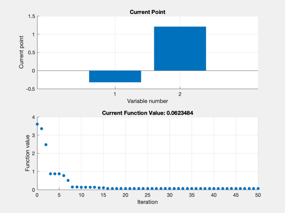
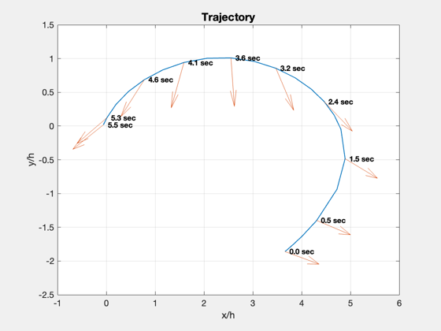
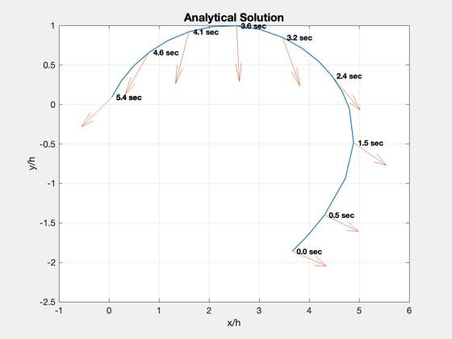

Demonstrate the Trajectory optimization using the Zermelo problem
This models a 2D constant velocity field. This is a good example for numerical optimization because there is an analytical cost function. The final state is the origin.
------------------------------------------------------------------------ See also RHSZermelo, PlotZermelo, ZermeloCost, ZermeloAnalyticalLambda, TrajectoryOptimization ------------------------------------------------------------------------
Contents
%------------------------------------------------------------------------------- % Copyright (c) 2005-2006 Princeton Satellite Systems, Inc. % All rights reserved. % Since version 7. %------------------------------------------------------------------------------- d = TrajectoryOptimization;
Dynamics function
%------------------ d.d.rhsFun = 'RHSZermelo'; d.d.plotFun = @PlotZermelo;
Cost function called by optimizer
%----------------------------------
d.d.costFun = @ZermeloCost;
Initial costate guess
%---------------------- d.d.lambda0 = [-0.4;1]; % Boundary conditions, initial and final state % [r;rDot;v;m] %--------------------------------------------- d.d.x0 = [3.66;-1.86]; d.d.xF = [0;0]; d.d.rF = d.d.xF(1); d.d.v = 1; d.d.h = 1;
Integration (ode113) parameters
%-------------------------------- d.d.data.absTol = 1e-6; d.d.data.relTol = 2.5e-4; d.d.data.maxStep = 0.1; d.d.tEnd = 10; % (s)
Weights for the costates
%------------------------- d.d.errorScale = [5e7; 1; 1]; d.method = 'downhill simplex'; d.repeat = 0;
Simplex parameters
%-------------------
d.d.stateTol = 1e-4;
d.d.funTol = 1e-4;
d.d.nIts = 600;
Optimize the trajectory.
It will use PlotZermelo to plot the results.
%------------------------------------------------------- [lambda,xf,tf] = TrajectoryOptimization( d ); disp('Costates for Simplex') disp(lambda{1})
Case 1: Method: downhill simplex
Iteration Func-count f(x) Procedure
0 1 3.60186
1 3 3.35152 initial simplex
2 5 2.47418 expand
3 7 0.866531 expand
4 8 0.866531 reflect
5 10 0.866531 contract outside
6 12 0.775953 contract inside
7 14 0.50396 contract inside
8 16 0.148131 contract inside
9 17 0.148131 reflect
10 19 0.126745 contract inside
11 21 0.126745 contract inside
12 23 0.126745 contract inside
13 24 0.126745 reflect
14 26 0.109584 contract inside
15 28 0.109352 reflect
16 30 0.0691972 contract inside
17 32 0.0663115 reflect
18 36 0.0663115 shrink
19 40 0.0663115 shrink
20 42 0.0663115 contract outside
21 44 0.0663115 contract inside
22 46 0.0631696 reflect
23 48 0.0624588 reflect
24 50 0.0624588 contract inside
25 52 0.0624588 contract inside
26 54 0.0624588 contract inside
27 56 0.0623775 reflect
28 58 0.0623775 contract inside
29 60 0.0623775 contract inside
30 62 0.0623775 contract inside
31 64 0.0623775 contract inside
32 66 0.0623713 reflect
33 68 0.0623713 contract inside
34 70 0.0623713 contract inside
35 72 0.0623533 reflect
36 74 0.0623533 contract inside
37 76 0.0623519 reflect
38 78 0.0623519 contract inside
39 80 0.0623519 contract inside
40 82 0.0623519 contract inside
41 84 0.0623504 reflect
42 86 0.062349 reflect
43 88 0.062349 contract inside
44 90 0.0623487 reflect
45 92 0.0623487 contract inside
46 94 0.0623487 contract inside
47 96 0.0623485 reflect
48 98 0.0623485 contract inside
49 100 0.0623485 contract inside
50 102 0.0623484 reflect
Optimization terminated:
the current x satisfies the termination criteria using OPTIONS.TolX of 1.000000e-04
and F(X) satisfies the convergence criteria using OPTIONS.TolFun of 1.000000e-04
Costates for Simplex
-0.32259
1.2077
  Compute and plot the analytical solution for comparison.
%--------------------------------------------------------- disp('Costates for Analytical') lambda = ZermeloAnalyticalLambda( d.d.x0(1)/d.d.h, d.d.x0(2)/d.d.h, d.d.v ) xF = PlotZermelo( lambda, d.d, '', 'Analytical Solution' ); disp('Achieved State') disp(xF) %-------------------------------------- % PSS internal file version information %-------------------------------------- % $Id: a16debc39d9da074f2dcc6519659ab07b8e1acb9 $
Costates for Analytical
lambda =
-0.50027
1.8646
Achieved State
0.059676
0.091217
